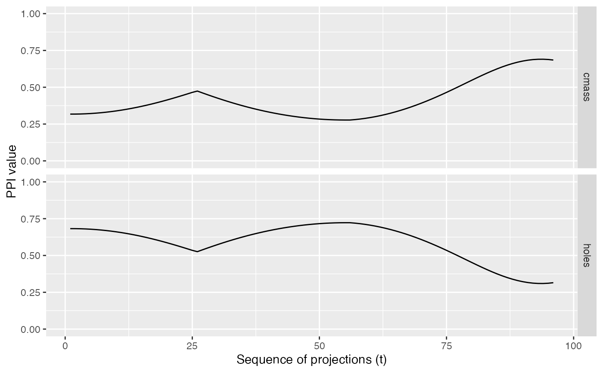

getTrace.RdTracing is used to test if the index value varies smoothly over an interpolated tour path. The index value is calculated for the data d in each projection in the interpolated sequence. Note that all index functions must take the data in 2-d matrix format and return the index value.
getTrace(d, m, indexList, indexLabels)
| d | data |
|---|---|
| m | list of projection matrices for the planned tour |
| indexList | list of index functions to calculate for each entry |
| indexLabels | labels used in the output |
index values for each interpolation step
d <- spiralData(4, 100) m <- list(basisMatrix(1,2,4), basisMatrix(3,4,4)) indexList <- list(tourr::holes(), tourr::cmass()) indexLabels <- c("holes", "cmass") trace <- getTrace(d, m, indexList, indexLabels)#> target_dist - cur_dist: 0 #> generation: dist = 0.9077353 #> target_dist - cur_dist: 0.9077353 #> generation: dist = 1.353309 #> target_dist - cur_dist: 0 #> generation: dist = 2 #> target_dist - cur_dist: 0 #> target_dist - cur_dist: 0 #> generation: dist = 2 #> target_dist - cur_dist: 2 #> target_dist - cur_dist: 1.95 #> target_dist - cur_dist: 1.9 #> target_dist - cur_dist: 1.85 #> target_dist - cur_dist: 1.8 #> target_dist - cur_dist: 1.75 #> target_dist - cur_dist: 1.7 #> target_dist - cur_dist: 1.65 #> target_dist - cur_dist: 1.6 #> target_dist - cur_dist: 1.55 #> target_dist - cur_dist: 1.5 #> target_dist - cur_dist: 1.45 #> target_dist - cur_dist: 1.4 #> target_dist - cur_dist: 1.35 #> target_dist - cur_dist: 1.3 #> target_dist - cur_dist: 1.25 #> target_dist - cur_dist: 1.2 #> target_dist - cur_dist: 1.15 #> target_dist - cur_dist: 1.1 #> target_dist - cur_dist: 1.05 #> target_dist - cur_dist: 1 #> target_dist - cur_dist: 0.95 #> target_dist - cur_dist: 0.9 #> target_dist - cur_dist: 0.85 #> target_dist - cur_dist: 0.8 #> target_dist - cur_dist: 0.75 #> target_dist - cur_dist: 0.7 #> target_dist - cur_dist: 0.65 #> target_dist - cur_dist: 0.6 #> target_dist - cur_dist: 0.55 #> target_dist - cur_dist: 0.5 #> target_dist - cur_dist: 0.45 #> target_dist - cur_dist: 0.4 #> target_dist - cur_dist: 0.35 #> target_dist - cur_dist: 0.3 #> target_dist - cur_dist: 0.25 #> target_dist - cur_dist: 0.2 #> target_dist - cur_dist: 0.15 #> target_dist - cur_dist: 0.1 #> target_dist - cur_dist: 0.05